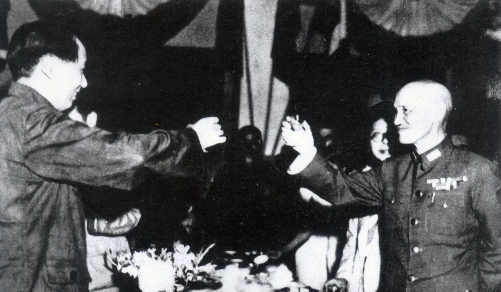

Alliances
The first collaboration between Chiang and Mao’s parties, the Kuomintang (Guo Min Dang) and CCP (Chinese Communist Party, Gong Chan Dang), started in 1923 known as the First United Front. Due to ulterior motives from both parties, the front disintegrated in about 1927. The KMT hoped to control the CCP through this alliance, and the CCP hoped to strengthen itself through internal connections with members of the KMT. Both parties neglected their initial mutual goal, which was to fight warlordism and strengthen China.
The second alliance between the KMT and CCP, led by Chiang Kai-Shek (Jiang Jie Shi) and Mao ZeDong, was the Second United Front in 1937. The alliance was announced after Chiang Kai-Shek was kidnapped and held hostage by his generals until he promised to collaborate with the CCP in a war against the invading Japanese (Xi’An Incident) Army. The Second United Front collapsed in 1945, opening the final phase of the Chinese civil war.
Meetings and Relations
In August of 1945, it is recorded that Chiang Kai-Shek and Mao ZeDong held their last meetings to discuss and negotiate the future of China. During the meeting, the Communists reinforced their forces in Manchuria, and the Nationalists attempted to stop the consolidation. Fighting between the two parties resumed in November.
During the meetings, it was recorded that even though Mao ZeDong and Chiang Kai-Shek both knew that the Civil war was inevitable, they both sought peace and negotiated what was the best for China in their opinions.
Similarities
Both Chiang Kai-Shek and Mao ZeDong had different ideologies which they adhered till their deaths. Both figures were leaders whose actions caused debate and controversial discussions among later generations.Significance
Ever since Jiang retreated to Taiwan from mainland China, the Taiwanese have been planning a retake of mainland China, while the CCP was also finding methods to suppress Taiwan's (the KMT's) goals. Throughout the years from 1949, conflicts and disputes between mainland China, governed by the CCP, and Taiwan, governed by the ROC, accumulated and continues to grow. Major factors that led to the conflicts modern Taiwan has with modern China is the aftermath of the Chinese Civil War and the separate governing of Taiwan after Jiang retreated in 1949.Chiang Kai-Shek’s Achievements, Significance, and Impact
The first point of Chiang’s significance is that throughout China's history, a total of three full-scale invasions of foreigners occurred. Two of them involved subjugation: The first time was after the Song Dynasty, and the second one is after the Ming Dynasty. The only time subjugation did not occur is after the fall of the Qing: the establishment of the Republic of China (ROC).
Jiang Jieshi (Chiang Kai-Shek) was not only a leader of the Republic of China and achieved victory when leading the Chinese in the Anti-Japanese War (Second Sino-Japanese War), but he was also a commander and an actual participant in that Anti-Japanese Resistance Chinese Patriotic War.
Jiang also repaired and built the national policy of Southwest China, thought of aligning with the World Anti-Fascist War to win the Anti-Japanese War, personally directed the Anti-Japanese War, and went to the war in person. The heroic deeds on the front line and through hardships and dangers showed his true character as a national hero.
From these points, Jiang deserves and is recognized with the title of a national hero.
Mao ZeDong’s Achievements, Significance, and Impact
It was Mao Zedong who showed China a path, found the right direction for China, and made them a reality. The Chinese Communists have worked together for 28 years, resisted bloody battles, and sacrificed millions of martyrs, including Chairman Mao's own family. Comrade Mao Zedong and the great leaders of that generation have made immortal and lasting achievements for the Chinese nation. Comrade Deng Xiaoping later reflected that without Mao Zedong, the Chinese people would still be searching in the dark for a long time.
The second important historical achievement is that after the founding of the People’s Republic of China, Mao Zedong led the Chinese people on the road to achieving socialist modernization. China has been an agricultural country with a self-sustaining smallholder economy. After the modern world, the West has carried out the industrial revolution and realized the modernization of society, but China has not yet caught up with the modern wave of the world and has been left far behind compared to the Western countries. This is an important reason why the suffering Chinese has been poor, weak, and passively beaten for hundreds of years during and after the Qing Dynasty.
Therefore, since the founding of New China, Mao Zedong and his comrades never forgot to attempt to create a new industrialized China. Without industrialization, nothing would be possible in the modern world. Thus, in 1953, when the national economy had just recovered and the war to aid North Korea had just come to an end (after the Korean War), China started the first five-year plan. During the plan, China built 156 projects with the assistance of the Soviet Union, which initially solved the basic problems of China's industrialization. The Five-Year Plan was supported by the Soviets, who contributed advice, logistics, and material support to China. From Mao Zedong to the second-generation leadership core of Comrade Deng Xiaoping, to the third-generation leadership core of Comrade Jiang Zemin, and then to the leadership with Comrade Hu Jintao and Xi Jinping as general secretaries, subsequent efforts have been made from generation to generation. The achievements due to industrialization the current generation of Chinese people are enjoying now are from the impactful achievements made by China’s revolutionary elders.